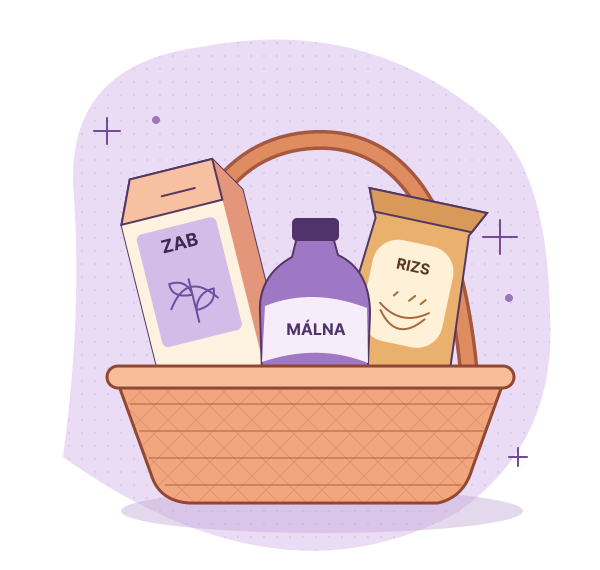

Ingyenes
Első keresésekhez és a napi bevásárláshoz.
0 Ft
- Keresés, szűrés és ingyenes fiók
- Legfeljebb 10 kedvenc
- 1 bevásárlólista
- Válogatott mintatartalmak
Termékelőnézet
Állítsd be, mit kerülsz, nézd meg a termékadat forrását, és tedd a kiválasztott termékeket a bevásárlólistádra.
A webes előnézet a tervezett funkciókat és csomagokat mutatja be.

A kereséstől a listáig
Válaszd ki az áruházat és azt, hogy milyen összetevőket kerülsz.
A termékadatlapon látszik az összetevőlista és az ellenőrzés alapjául szolgáló forrás.
Add hozzá a kiválasztott termékeket, és pipáld ki őket vásárlás közben.
A termékadatlap
A termékadatlapon láthatod a besorolás okát, az összetevőket, a forrást és az ellenőrzés dátumát. A boltban mindig nézd meg az aktuális csomagolást.
Tervezett csomagok
A keresés, az érzékenységi szűrés és a termékadatok mindhárom tervezett csomag részei. Az árak tesztelendő javaslatok.
A feltüntetett éves ár egy év teljes díja.
Első keresésekhez és a napi bevásárláshoz.
Több listához és közös bevásárláshoz.
Listák mellé receptek és olvasnivalók.
Az indulásról
A demó fiók nélkül működik. Az éles verzióban is vendégként kezdhetsz keresni. Fiókkal a mentéseidet az eszközeid között is elérheted.
Az első áruházláncot az ellenőrizhető termékadatok alapján választjuk ki. A demó fiktív áruházakat és termékeket tartalmaz.
A csomagok és az árak előnézetben láthatók. Az előfizetés a fizetős induláskor nyílik meg, a csomagok és az árak véglegesítése után.
A keresést, az érzékenységi szűrőket, a termékadatlapot, a mentést és a csomagok előnézetét. A demó helyben fut, kitalált termékekkel.
Nézd meg, mit tervezünk a kereséshez és a bevásárlólistához.